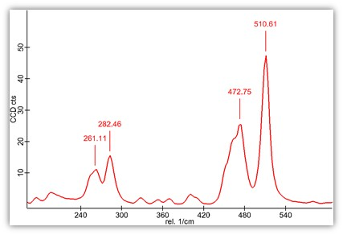
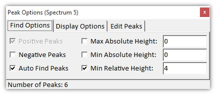
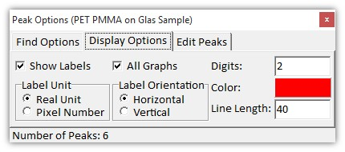
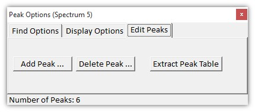

|
图谱查看器峰标记
|
图谱查看器允许自动查找并标记峰；此外，用户可以手动添加或移除峰。峰会保存在项目文件中。
您可以使用杂项视觉环形菜单、上下文菜单或快捷键"F"（"查找峰"）来打开或关闭峰标记：

用户界面
启用峰标记功能时将打开一个峰查找对话框；请注意，即使关闭此对话框，标记仍然保持启用状态。
您可以通过在环形菜单/上下文菜单/快捷键中再次选择"显示峰"功能重新打开对话框。
查找选项选项卡

这些选项可用于更改自动峰查找算法。
正峰（复选框）：
启用正峰的峰查找计算。
负峰（复选框）：
启用负峰的峰查找计算。
自动查找峰（复选框）：
启用或禁用自动峰查找算法。如果您手动添加或移除峰，自动峰查找算法将被禁用。
最大绝对高度（浮点编辑框）：
高于此值的峰将在自动峰查找算法中被忽略。
最小绝对高度（浮点编辑框）：
小于此值的峰将在自动峰查找算法中被忽略。
最小相对高度（浮点编辑框）：
相对高度小于此值的峰将在自动峰查找算法中被忽略。
峰数量：
显示当前的峰数量（包括用户添加的峰）。
显示选项选项卡

显示标签（复选框）：
在这里您可以在标签和垂直线之间切换。
所有图谱（复选框）：
如果勾选，当前图谱查看器中的所有图谱对象都将被标记。
标签单位（单选组）：
定义标签使用实际单位（例如"rel. 1/cm"）还是像素编号。
标签方向（单选组）：
定义标签的方向。
位数（整数编辑框）：
定义峰标签的精度；请注意，峰查找具有亚像素精度。
颜色（颜色选择器）
定义峰标签的颜色。
线长（整数编辑框）
定义连接峰到其标签的线的长度。
编辑峰选项卡

添加峰（按钮）
打开一个对话框，您可以在其中手动在所需的X和Y位置添加峰标签。
请注意，如果添加或删除峰，自动峰查找算法将被禁用。
删除峰（按钮）
打开一个对话框，您可以在其中选择显示的峰之一并将其从标记列表中移除。
请注意，如果添加或删除峰，自动峰查找算法将被禁用。
提取峰表（按钮）
这将把所有峰及其扩展信息作为表格提取到文本数据对象中。